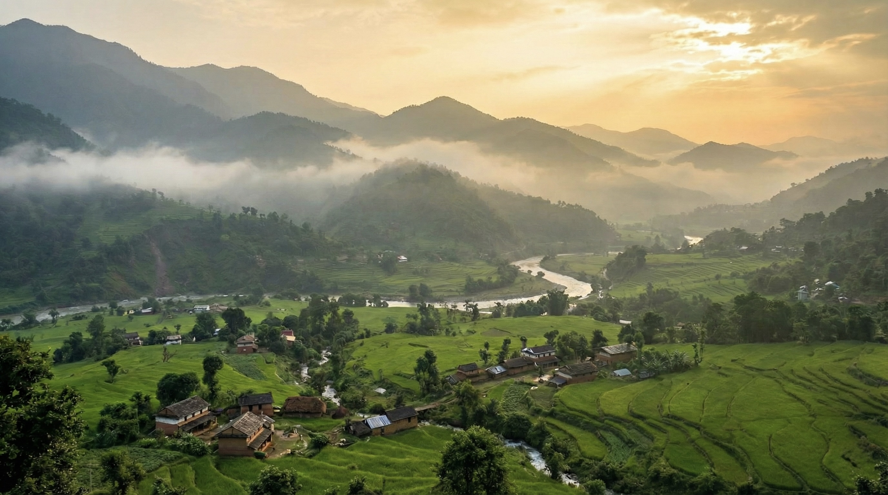

Trust Work Timeline
Highlights of seva, satsang, and growth from 2016 to the present. This timeline can be expanded with your official milestones and dates.
2016–Present
Milestones of Kripalu Padma Trust
Seva Outreach Expansion

Strengthened satsang outreach and community seva activities across North India.
Infrastructure Planning

Early development planning for Himalayan retreat and facilities to support long-term sadhana.
Community Service Drives

Focused initiatives for food distribution and community support programs.
Shri Kripalu Kunj Expansion

Facility improvements in Bathinda for satsang gatherings and volunteer seva.
Seva Continuity

Sustained spiritual support, guidance, and essential seva services.
Program Growth

New satsang formats and initiatives to support devotees across regions.
Youth Sadhana Programs

Dedicated sessions and mentorship for young seekers and volunteers.
Himalayan Retreat Momentum

Accelerated retreats and spiritual programs in the Chail region.
Seva Capacity Building

Expanded volunteer training and seva infrastructure.
Winter Warmth Drives

Large-scale distribution of winter essentials and community support.
Ongoing Expansion

Continuing development of Radha Govind Dham and seva missions.